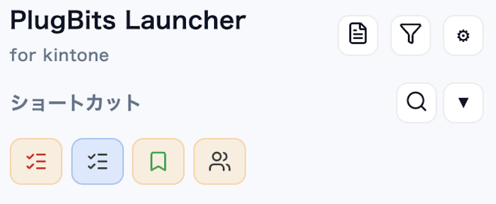
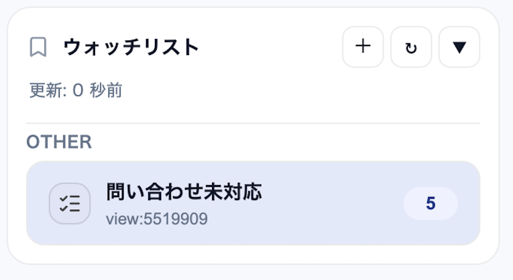
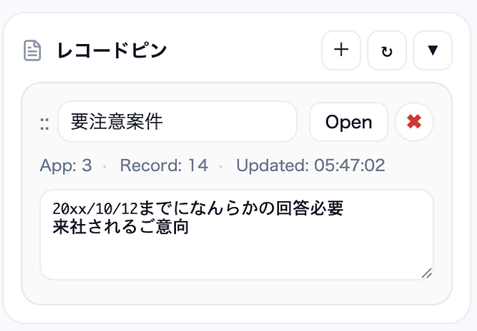

目的の場所を探す時間が積み重なる
あのアプリ、あの一覧、さっき見たレコード。kintoneの中には情報が多く、目的の場所を探す時間が意外とかかります。
Chrome Extension for kintone
kintoneで仕事をしていると、
「あのアプリ」「さっきのレコード」「今どの仕事が残っているか」を探す時間が意外と増えていきます。
PlugBits Launcherは、ショートカット・履歴・ウォッチリスト・Spreadsheet Viewを1つのサイドパネルにまとめる無料のChrome拡張です。
Problem
kintoneで仕事をしていると、
「あのアプリはどこだろう」「さっきのレコードをもう一度見たい」「承認待ちは何件あるだろう」
そんな小さな“探しもの”が、一日の中で何度も発生します。
あのアプリ、あの一覧、さっき見たレコード。kintoneの中には情報が多く、目的の場所を探す時間が意外とかかります。
承認待ちや未処理の件数を確認するために、ビューを開いて数を見にいくことがあります。
目的の場所を探す小さな時間が、作業の流れを少しずつ途切れさせます。
Solution
ブラウザにkintone専用のサイドパネルを作ることで、
アプリ、レコード、よく使う画面、残作業の件数にすぐアクセスできるようにします。
Free Features
PlugBits Launcherは、無料のChrome拡張として使えます。
「目的の場所にすぐ行ける」「今やるべき仕事が見える」という体験を、まず無料で提供します。

よく使うアプリをアイコンで固定。目的のアプリへすぐ移動できます。

承認待ちなど特定ビューの件数を表示。今やるべき仕事の残数を確認できます。

「さっき見ていた場所」に一瞬で戻れます。

スプレッドシートは、kintoneを置き換えるものではなく、必要なときにさっと開ける補助ビューです。
元の画面を離れすぎず、一覧の中で必要な情報をまとめて確認できます。
Philosophy
業務ツールは会社が決めるもの。
でも、仕事の進め方は自分で整えられる。
PlugBitsは、あなたのブラウザに小さなコクピットをつくります。